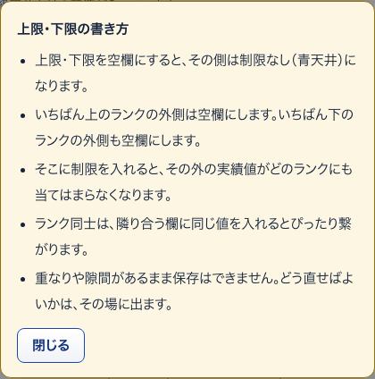
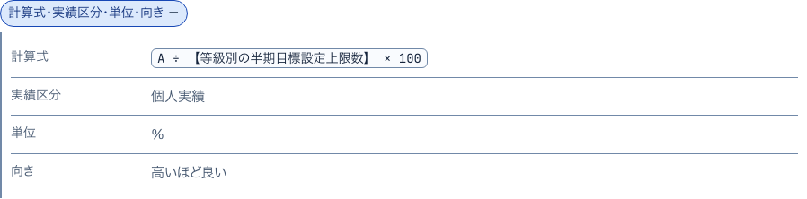
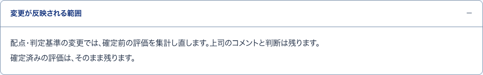
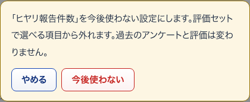
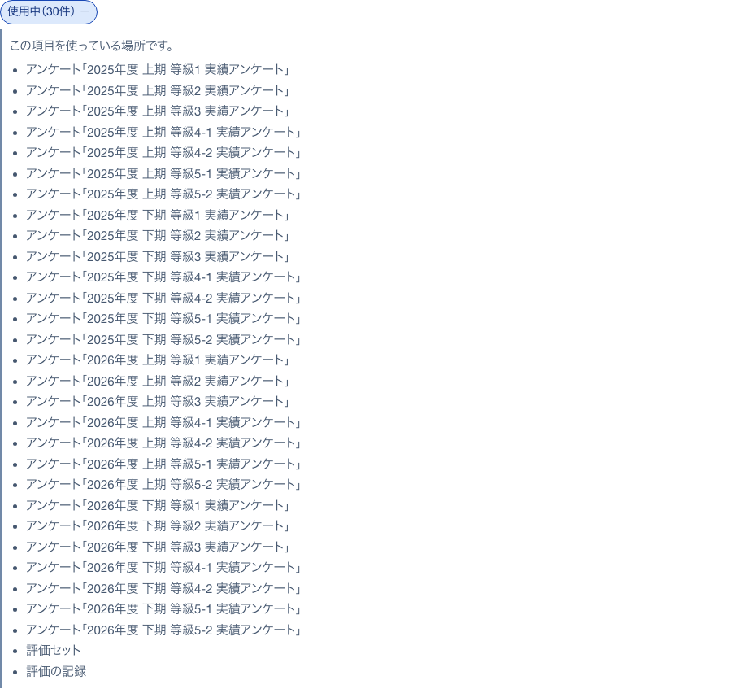
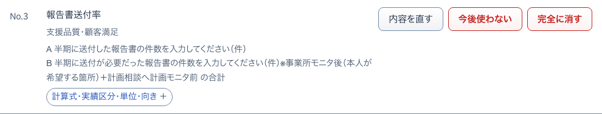

8上限・下限の書き方小窓
S19 選んだ項目の基準を決める ・ 押すもの: 「上限・下限の書き方を見る」 ・ 閉じる: 閉じる

中に出るもの
- 空欄はその側の制限なし
- いちばん上と下のランクの外側は空欄にする
- そこに制限を入れると外の実績値がどのランクにも当たらない
- 隣り合う欄に同じ値を入れるとつながる
- 重なりや隙間があるまま保存はできない
中で押せるもの
- 閉じる: 小窓を閉じる
11計算式・実績区分・単位・向き開いて見る
S21 KPI項目 ・ 押すもの: 「計算式・実績区分・単位・向き」

中に出るもの
- 計算式
- 実績区分
- 単位
- 向き
9変更が反映される範囲開いて見る
S19 選んだ項目の基準を決める ・ 押すもの: 「変更が反映される範囲」

中に出るもの
- 配点・判定基準の変更では確定前の評価を集計し直す（上司のコメントと判断は残る）
- 確定済みの評価はそのまま残る
10確定済みの評価が動かない理由開いて見る
S20 全等級区分に共通の設定 ・ 押すもの: 「確定済みの評価が動かない理由」
中に出るもの
- 確定済みの評価は判定した当時の値を控えている
- そのため今の基準では集計し直さない
14今後使わない確かめる小窓
S21 KPI項目 ・ 押すもの: 「今後使わない」 ・ 閉じる: やめる

中に出るもの
- 「（項目名）」を今後使わない設定にします。
- 評価セットで選べる項目から外れます。
- 過去のアンケートと評価は変わりません。
中で押せるもの
- 今後使わない: 項目を使わない設定にする
- やめる: 小窓を閉じる。何も変わらない
12使用中（n件）開いて見る
S21 KPI項目 ・ 押すもの: 「使用中」

中に出るもの
- この項目を使っている場所です。
- 使っているアンケートと評価セットの名前
13項目の編集欄開いて見る
S21 KPI項目 ・ 押すもの: 「内容を直す」 ・ 閉じる: やめる

中に出るもの
- 項目名・単位・向き・実績区分・分類・金銭系の項目
- 実績の聞き方（聞くこと・単位・入力の決まり・計算式での役割）
- 計算式と「型から入れる」
- 計算式の補足・備考
- 使用中の項目は変えられない欄の代わりに説明
中で押せるもの
- 保存する: 直した内容を保存して閉じる
- やめる: 保存せずに閉じる
- ＋ 聞くことを追加: 聞くことを1行増やす（6つまで）
- 削除: その聞くことの行を消す
- ⇈ ↑ ↓ ⇊: 聞くことの順番を変える（つまみの長押しでも動かせる）
- 型から入れる: 計算式に決まった形を入れる